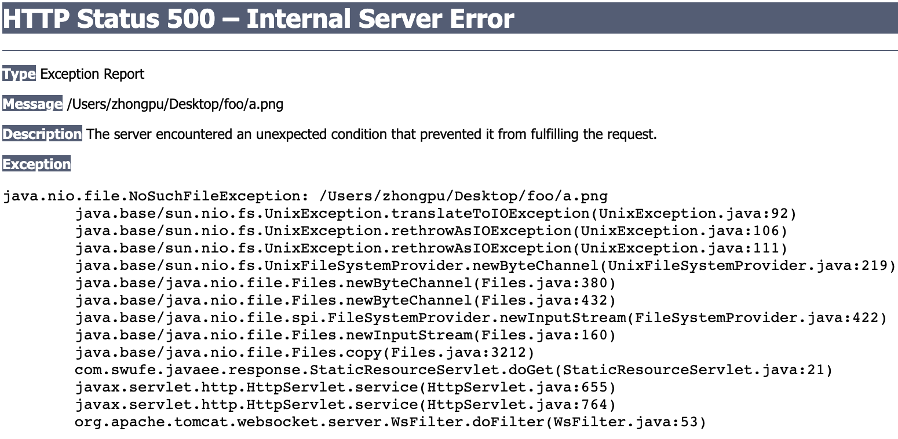
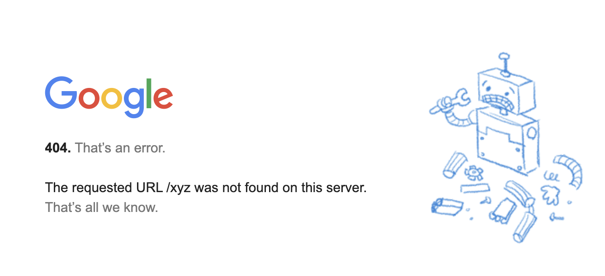
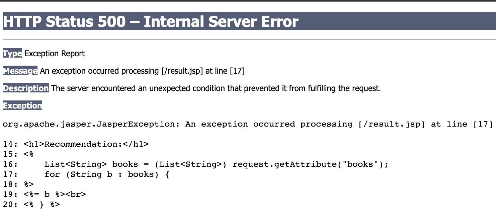

3.6 More About Response (2)
In this section, we continue studying response using a question-oriented method. To be specific,
- How to serve static files outside the web application?
- How to customize error page?
- To respond, or not to respond?
Static files outside the web application[1]
In the last section, we introduced several methods to return an image as the response. What if the cat.png is located outside the web application? This question can be easily solved as long as we can get its path. Then, what if we would to server a static folder outside the web application? For example, a folder is on you desktop and its absolute path can be /Users/zhongpu/Desktop/foo on MacOS, or C:\Users\zhongpu
Desktop\foo on Windows, or /home/zhongpu/Desktop/foo on Linux, and there are all kinds of files (e.g., .mp3, .pdf) in the folder.
We expect to get a.mp3 via /static/a.mp3, get b.png via /static/b.png, and so on. Shall we write every single servlet for each file? Of course not! We even do not know how many files, and what types they are.
To solve this problem, we need to solve several sub-problems:
- How to write a general URL pattern?
The URL mapping for servlets supports wildcard characters. For example, /static/* can match any URL starting with static/.
- How to extract the file name from URL?
For example, we need to extract string a.mp3 from URL /static/a.mp3. This task can be accomplished by a simple string operations.
String filename = URLDecoder.decode(request.getPathInfo().substring(1), StandardCharsets.UTF_8);
Here, request.getPathInfo() returns any extra path information associated with the URL the client sent when it made this request. The extra path information follows the servlet path but precedes the query string and will start with a "/" character. For example, for URL /static/a.mp3, it will return /a.mp3. And decode() is used to decode an application/x-www-form-urlencoded string. Recall that URL is encoded by the browser before sending an HTTP request.
- How to get the mime type of a file?
String mime = getServletContext().getMimeType(fileName);
response.setContentType(mime);
Again, ServletContext is on call. The complete code can be found at StaticResourceServlet.java of ch3/response.
Error page
Errors often occur in a system, and how to handle them properly mainly depends on the business logic. Recall the example converting a string to int in Section 3.2.
Suppose there is no a.png inside our static folder. What if we access http://localhost:8080/response/static/a.png? As expected, it throws a NoSuchFileException. Yes, there is NO such file. As a result, HTTP response's status code becomes 500, indicating there is an Internal Server Error.

Then what if we access http://localhost:8080/response/abc? Again, suppose currently there is no any resource whose URL name is abc. In this case, HTTP response's status code becomes 404, indicating the targeted resource is NOT Found.
Some severs have their default error page, as we have witnessed, but we would like to customize the error page for our website. Fig 3.14 shows the 404 page of Google.

Firstly, we need to prepare a resource, including an HTML, JSP and servlet, to take the responsibility to show 404. Here we simply use an HTML page which is adapted from zhihu.com. Next, we add the following configuration in DD (i.e., web.xml):
<error-page>
<error-code>404</error-code>
<location>/404.html</location>
</error-page>
It tells the Tomcat that please display 404.html when the status code is 404. Note that if <error-code> is not specified explicitly, it means it is able to match all status codes. That is all for customizing an error page.
[!WARNING] HTTP status code is commonly misused in software engineering.
Please keep the rule "Use it as it should be" in mind when designing APIs. Some programmers may always return 200 even if there is an error, and it is definitely a bad practice. For example, in the last subsection's example, from the standpoint of an API, it would be better to return a 404 when the file is not found. And this can achieved by a simple if-else[2]:
if (source.toFile().exists()) {
response.setContentType(mime);
ServletOutputStream os = response.getOutputStream();
Files.copy(source, os);
} else {
response.sendError(404);
}
To respond, or not to respond
In the previous examples, we mainly deal with the response within the servlet. In other words, the single servlet does all work for the request-response model in the server. But, you can choose to have something else handle the response for your request. You can either redirect the request to a completely different URL, or you can dispatch the request to some other component in your web app (as we have seen in the mini MVC project). In what follows, we will discuss about when and how to make a response by redirecting and dispatching.
[!TIP] TL;DR. Servlet redirect makes the browser do the work, while a request dispatch does the work on the server side.
Redirect
As for redirect, it means when a web browser attempts to open a URL that has been redirected, a page with a different URL is opened.
@WebServlet(name = "RedirectServlet", value = "/redirect")
public class RedirectServlet extends HttpServlet {
@Override
protected void doGet(HttpServletRequest request, HttpServletResponse response) throws IOException {
response.sendRedirect("https://zhongpu.gitlab.io/java-web-book/");
}
}
In the code above, when a user visit /redirect, it would send a redirect to another URL. Let's have a closer look at what it happened exactly.
- Step 1: As usual, the client sends an HTTP request to the server.
- Step 2: The server redirects this request by returning a new URL to the client[3]. Note that the response status code is
301(indicating Moved Permanently) or302(indicatingFound)[4]. - Step 3: After the client received the new URL, it will visit this new URL automatically.
Since it is the client that does all work for a new request, the client will see the new URL.
Now let's try to make some changes for the new URL. In the code above, the URL is absolute, but relative URLs are more common when using sendRedirect(). Relative URLs come in two flavors: with or without a starting forward slash ("/")[5].
Image the client originally typed in: http://localhost:8080/response/foo/redirect.
When the request comes into the servlet named "redirect", the servlet calls sendRedirect() with a relative URL that does not start with a forward slash:
sendRedirect("bar/test.html")
Then container builds the full URL relative to the original request URL: http://localhost:8080/response/foo/bar/test.html.
But if the argument to sendRedirect() starts with a forward slash:
sendRedirect("/bar/test.html")
Then the container builds the complete URL relative to the web container root itself. So the new URL will be: http://localhost:8080/bar/test.html. Recall that there may be several applications within a container.
Readers can design tests to understand these two kinds of relative URLs[6].
[!NOTE] You cannot do a
sendRedirect()after writing to the response.
Dispatch
We have studied how to dispatch a request in the mini MVC project. Different from redirect, a request dispatch does the work on the server side.
RequestDispatcher dispatcher = request.getRequestDispatcher("json");
dispatcher.forward(request, response);
Instead, the browser address bar didn't change, and the user does not know that json generated the response. Different from redirect, the servlet only make one response, and it simply forwards the same request to another resource within the same application.
Note that the parameter what getRequestDispatcher() accepts is always a relative path. Similarly, relative URLs come in two flavors: with or without a starting forward slash ("/").
@WebServlet(name = "Forward2Servlet", value = "/foo/forward")
public class Forward2Servlet extends HttpServlet {
@Override
protected void doGet(HttpServletRequest request, HttpServletResponse response) throws ServletException, IOException {
request.getRequestDispatcher("/json").forward(request, response);
}
}
Image this servlet is accessed by http://localhost:8080/response/foo/forward. The relative path /json, starting with "/", will build a path relative to the servlet's context root. So the final path is http://localhost:8080/response/json. If it were json, without the forwarding slash, then the final path would be http://localhost:8080/response/foo/json.
A summary of redirect and dispatch
To sum up, dispatch is a practical technique in MVC design, while redirect is mainly to make a web page available under more than one URL address. For example[7]:
- Force HTTPS: Some websites would redirect HTTP requests to HTTPS requests for security issues.
- Moving pages to a new domain: Some websites may has more than one domain name, and they would redirect
olddomain.comtonewdomain.com. - URL shortening: Web applications often include lengthy descriptive attributes in their URLs, and URL shortening services provide a solution to this problem by redirecting a user to a longer URL from a shorter one.
Last but not the least, let's consider a non-trivial problem for MVC design: where should we put views? Recall that in the mini MVC project, result.jsp is located at the webapp, then what happens if a user visit result.jsp directly without the transit of forward? She would find there is a 500 error due to the NullPointerException. Although we can provide default values for them or add non-null checking, this approach does not really make logic sense.

To avoid this problem, a better solution is to hide the view from users. So we could put views under webapp/WEB-INF, where users cannot access them directly.
request.getRequestDispatcher("/WEB-INF/result.jsp").forward(request, response);
[1] This subsection is adapted from StackOverflow.
[2] As a matter of fact, there is also a method called setStatus(). But if we consider such status code as an error, we should use sendError().
[3] The new URL is in HTTP response's Location header.
[4] 3XX is for Redirection messages; 4XX is for Client error responses; 5XX is for Server error responses.
[5] Readers may analogize URLs to paths in file system when it comes to absolute or relative.
[6] It is also legal to double forward slash ("//"), and the container interprets it as a network-path reference. For example, //zhongpu.gitlab.io/java-web-book/
[7] https://en.wikipedia.org/wiki/URL_redirection